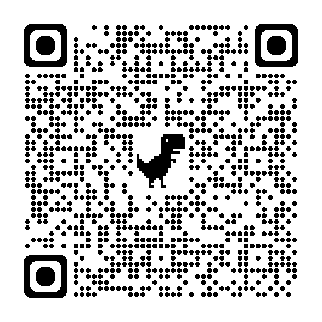

校友の皆様へ
①ご挨拶
旧早稲田祭は、当時の早稲田祭実行委員会が特定の政治思想団体と癒着していたことにより中止になりました。その後、大学から資金援助を一切受けない「自主財源」を掲げた学生の手によって早稲田祭は復活いたしました。「自主財源」による早稲田祭の開催のため、校友の皆様には毎年多大なるご理解とご協力を賜っております。昨年度も校友の皆様のお力添えにより、早稲田祭2022を大盛況のうちに終えることができました。改めて深く御礼申し上げます。
早稲田祭2023運営スタッフは、早稲田祭2023の開催にあたり校友の皆様にご支援をお願いしております。以下に詳細を記載いたします。
身勝手なお願いとは充分承知しておりますが、ご支援の程何卒よろしくお願い申し上げます。
②支援金のご案内
●ご芳名等の掲載
ご支援いただいた皆様のご芳名を早稲田祭2023公式パンフレット及び公式サイトに掲載いたします。公式パンフレットにつきましては名刺広告の形で掲載いたします。入稿期限の関係上、公式パンフレットへのご芳名掲載のご希望につきましては9月末で締め切らせていただく可能性がございますので予めご了承ください。団体名・会社名、コメントの掲載や匿名希望も承りますので、お気兼ねなくお申し付けください。
●感謝状のお贈りについて
早稲田祭2023当日、ご支援いただいた皆様には当日の「卒業生サロン」企画にて、お一人おひとりに現役の早大生から感謝状をお贈りする予定です。入稿期限の関係上、感謝状の受け渡しのご希望につきましても9月末で締め切らせていただく可能性がございますので予めご了承ください。遠方にお住まいの方や予定が合わず来場が叶わない方へは個別に対応いたしますのでお申し付けください。
●支援金の種類
個人：1口5,000円より承ります
団体：1口10,000円より承ります
※口数に関しては特に上限はございませんが、より多くのご芳名や団体名を掲載するために、名刺広告枠は個人・団体1件につき1つまでとさせていただきます。また、1口未満の支援金も個別で対応させていただきますが、その場合は名刺広告の掲載はございませんのでご承知おきください。
●支援金締め切り
令和5年10月末
●支援金手続き
銀行口座への振り込み、またはPayPayでの送金にて対応させていただきます。お手数をおかけいたしますが、ご入金前に下記URLのフォームへのご回答をお願いいたします。併記のQRコードからもご利用いただけます。
フォームを送信いただいた後、メールにて入金先をお知らせいたします。
【URL】
https://docs.google.com/forms/d/e/1FAIpQLSdLzMynb057uvMmBfvIgFaAsCkRa57ndohdr0uB67uk-qOnww/viewform
ご不明な点等ございましたら、下記アドレスにご相談ください。
alumni@wasedasai.net
早稲田祭2023が現役早大生のみならず校友の皆様にも存分に楽しんでいただける場となるように、早稲田祭2023運営スタッフ一同、精進して参ります。校友の皆様にとって、早稲田祭2023が少しでも価値あるものになれば幸いです。校友の皆様の早稲田祭2023へのご参加を心よりお待ちしております。
【QRコード】
